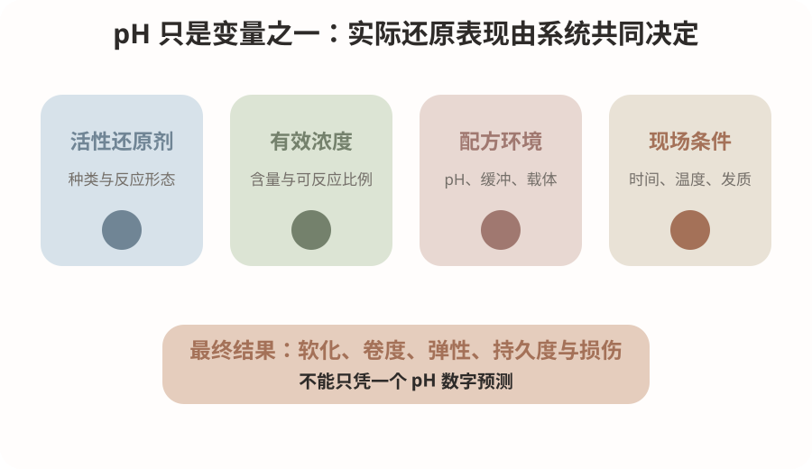
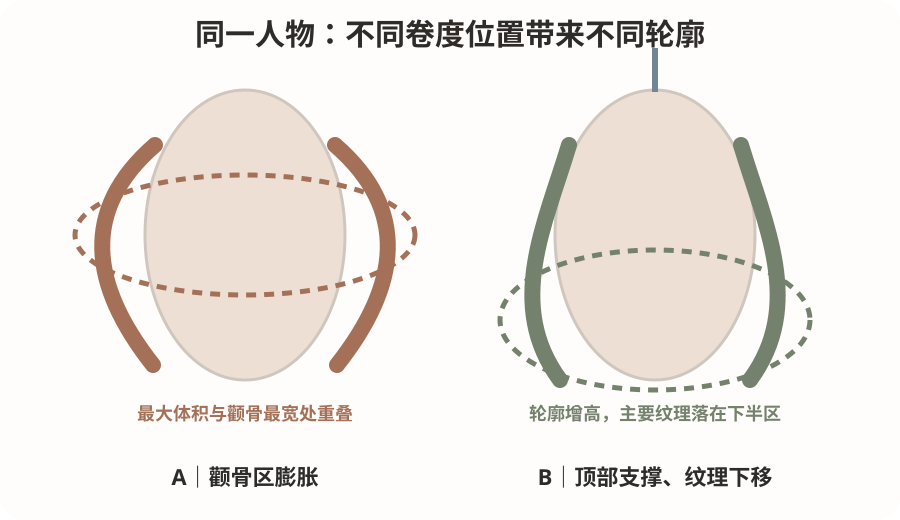
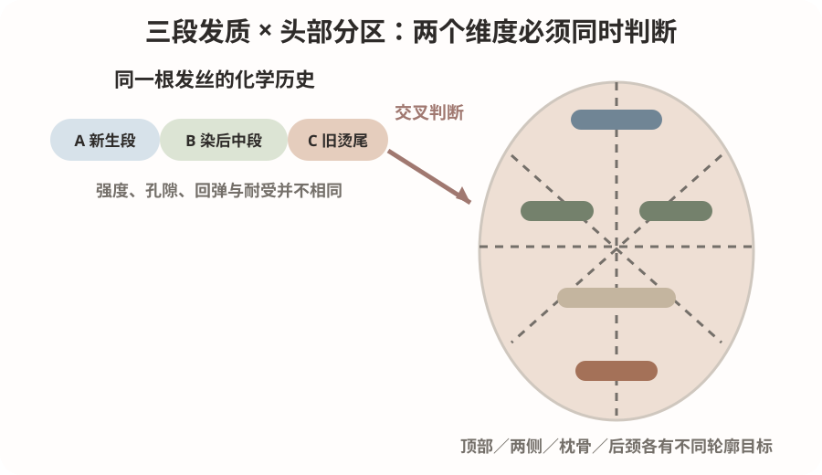

2026-10-14
毛发皮质层中的角蛋白依靠二硫键、氢键、离子相互作用和疏水作用共同维持结构。巯基类还原剂使部分二硫键发生还原，降低原有形态约束；卷杠和张力规定几何曲率；水分与加热改变纤维的热机械响应；干燥与氧化帮助新形态稳定。
同样标示pH 8.0的两款药水，仍可能因为活性还原剂种类、有效浓度、缓冲能力、膏体或凝胶载体、扩散速度与建议接触时间不同，而产生不同的软化、卷曲和损伤表现。pH是反应环境的重要变量，但不是药力的唯一读数。
门店内部的pH—软化百分比可以作为经验沟通表，但不能解释成科研测得的二硫键断裂比例。CA也不是所有品牌统一的化学缩写，必须读取真实成分和技术资料。将pH 9.0与5.5直接算术平均为7.25，同样缺乏化学依据；pH是对数尺度，混合结果受浓度与缓冲体系影响，未经厂家许可不应自行混配还原剂。

本课优先检索2026-10-07至2026-10-14，未确认该窗口内出现能够直接建立门店通用pH药力标准的新高质量原始研究，因此采用一项经典蛋白化学实验、一项2026年受损毛束研究和一项近年的角蛋白结构研究。
S1核心结论：在其特定实验条件下，增加还原时间会减少再氧化后重新形成的二硫键，并增加含硫物质流失；比较pH 7.5—10.0时，pH 9.0出现最大胱氨酸断裂量。证据强度为中，因为有直接氨基酸分析，但年代、配方和条件有限。它支持时间与pH会改变结构变化，不证明所有商品药水在相同pH下药力相同。
S2核心结论：受半胱胺-HCl反复损伤的毛束，在相同乳霜还原剂后追加不同pH低黏度凝胶处理，卷曲效率、拉伸强度、弹性模量和损伤指标不同。证据强度为中，因为有毛束力学和SEM数据；它支持载体、顺序、时间与pH组合共同影响结果，不能直接复制为所有品牌真人流程。
S3核心结论：指定的1.0 mol/L巯基乙酸铵、pH 9.25条件下，角蛋白中间丝的微观和宏观结构从还原初期就开始变化，氧化只能显著但并非完全恢复受损结构。证据强度为中至强的机制证据；它支持涂放先后和实际接触时间值得记录，不能给出门店通用分钟数。
模拟教学案例，不是真实顾客记录。顾客35岁，偏宽圆方脸，颧骨稍宽，顶部偏扁，颈部较短；锁骨下约5厘米，中等偏少发量，细软发。A段为较健康新生发，B段为染后略干中段，C段为旧热烫发尾且湿态回弹较弱。她希望自然法式S弯，不要太卷，顶部蓬一点，脸周显小，每天整理不超过5分钟。
诊断顺序不是先选药水，而是分别检查A、B、C三段的湿态强度、回缩、缠结、断裂和异常黏滑。C段若拉伸后恢复慢、明显发黏或易断，应避烫或修剪，不能为追求卷度继续增强药力。剪裁保留底线密度，以中低层次建立轻盈感；顶部只做轻支撑，颧骨附近控制横向体积，主要S弯从下颌附近或略下逐渐出现。
药剂依据真实活性成分、厂家说明和离体毛束结果选择，并记录第一片与最后一片的接触时间。软化结合试卷形态、湿态强度、回弹和异常损伤判断。冲水后统一吸水方法，控制同区域发片厚度与张力；杠径、圈数、温度、时间及氧化遵守对应产品和设备说明。本课不虚构通用最佳参数。预期成品是自然吹干后松弛的下移S纹理；旧尾风险过高时以修剪和重构轮廓补救，不追加高强度处理。
药水决定毛发是否具备重新塑形的条件，卷度位置才决定人物轮廓是否协调。对偏宽圆方脸和较短颈部，若最大蓬松点与颧骨最宽处重叠，容易放大脸部横向比例。更合适的候选是顶部增加少量高度，颧骨附近相对收紧，主要纹理落在下颌以下，使视觉重心下移。
正面观察头发最大宽度是否与脸部最宽位置重叠；45度观察第一弯是否顺畅连接颧骨、下颌和肩颈；侧面观察顶部高度、后枕圆度与后颈下摆是否平衡。窄长脸可能需要适度增加两侧体积，不能把同一设计机械复制。
人物设计不能用固定脸型公式替代现场观察。年龄、气质和职业不能从脸型推断；应把顾客真实诉求、日常分缝、别耳习惯、整理时间和可接受的修剪范围一并纳入方案。

图1是原理图，把活性还原剂、有效浓度、配方环境和现场条件分开，强调pH只是系统变量之一。图2是技术图，把同一根发丝的三段化学历史与顶部、两侧、枕骨、后颈的轮廓目标放在同一张图中，训练交叉判断。图3是美感图，用同一抽象人物骨架比较颧骨区膨胀与顶部支撑、纹理下移的区别。
三张图均为原创莫兰迪色教学示意图，不含真人、品牌或论文图表。图示不能识别真实发质，也不能证明某个药水或排杠方案必然产生图示结果。阅读时先看图注中的“这张图看什么”，再将原理、技术和人物美感连接起来。
顶部目标是轻支撑，门店经验候选提升角约70—90度；两侧目标是顺脸周流向并控制颧骨宽度，候选提升角约30—60度；枕骨目标是建立后脑圆度并与顶部衔接，候选提升角约45—75度；后颈目标是减少下摆堆积，候选提升角约0—30度，旧尾风险高时可不烫或修剪；刘海和脸周按毛流、第一弯位置单独判断。角度以局部头皮切线为0度，均属于教学候选，不是科研验证的通用最佳值。
杠径、有效卷入圈数、发片厚度、张力、含水状态和相邻区过渡必须同时记录。最常见错误包括：顶区压根或炸根、脸周左右流向冲突、枕骨上下断层、橡皮筋或纸张造成折痕、旧尾为了追卷而过度卷入、后颈体积堆积及发尾乱翘。
操作顺序应从人物轮廓目标出发，再看各发段耐受，最后决定哪些发片进入化学处理和卷杠范围；不能先选全头同一杠径，再事后解释美感。

先问五个问题：最想改变的是顶部、脸周还是下摆；参考图是自然吹干还是造型后；近期烫染漂历史和旧烫位置；能够接受修剪多少旧发尾；每天愿意整理几分钟。
可直接使用的话术：你喜欢的重点不是整头都很卷，而是顶部有一点高度，脸旁边不会太宽，从下颌开始有柔和纹理。你的发尾以前烫过，我要先检查它现在的弹性。如果这部分已经脆弱，我不会为了追求卷度继续加强处理，而会通过层次、卷度位置和安全处理范围把整体做协调。照片如果经过吹整，我也会提前告诉你自然吹干后的真实状态。
沟通的目的不是承诺复制参考图，而是共同确认目标位置、风险边界、日常维护、卷度持久度和可接受的替代方案。
先练：两瓶烫发剂都标示pH 8.0，一瓶是巯基乙酸盐体系，另一瓶采用不同巯基体系。能否判断它们软化能力完全相同并直接使用相同时间？
参考答案：不能。先确认活性还原剂和有效浓度，再看产品技术说明、适用发质、载体、接触时间和温度限制，最后用同批离体毛束验证。思维路径是：配方信息→发质结构→还原反应→软化终点→卷度形成→氧化稳定→洗后弹性。
风险判断：若只根据pH倒推药力，就会忽略缓冲、扩散、毛发历史和实际接触时间；若两款产品厂家工艺不同，比较结果只能视为产品整体体系差异，不能单独归因于pH。
今日低风险毛束实验：比较两款标示pH接近的正规商品烫发剂在同批天然毛束上的整体表现。材料包括同批毛束至少6束、两款产品、统一杠体、电子秤、pH计、拍摄标尺和标准洗发用品，每组至少3束。
唯一主动比较项是产品体系。两款产品分别严格遵守各自厂家工艺，不混药，不交叉使用定型剂。控制毛束长度与重量、杠径、张力、拍摄机位、自然干燥时间和洗发方法。记录活性成分、实测pH、实际接触时间、24小时卷径、标准洗发5次后的卷形、毛躁、断裂和弹性。
如果厂家工艺不同，这只能比较产品整体表现，不能把差异单独归因于pH或还原剂种类。只有多批毛束结果重复一致，才可形成针对特定发质、产品和设备的门店初步SOP；不得直接在顾客头上做未知高风险试验。
今天最重要的原理：pH会影响还原环境，但不能单独代表药水强度，更不能直接代表二硫键断裂比例。
最容易犯的错误：只根据pH给产品划分强弱，或者把两个pH数字做算术平均后当成混合结果。
明天最值得观察的细节：同一位顾客的新生段、染后中段和旧烫发尾，在湿态回弹、缠结和试卷形态方面是否一致。